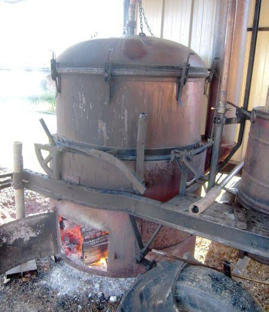

Eaux-de-vie
de fruits


⟹ Vins & Spiritueux ⟸
Le Tarn-et-Garonne est l’un des grands vergers de France. Le département fournit à lui seul près de 60 % des prunes de table françaises, il est un grand producteur de pommes, de raisin de table avec le Chasselas de Moissac, de cerises, de kiwis et de noisettes. Là où les fruits abondent, l’eau-de-vie n’est jamais loin.

Distiller les fruits a d’abord été une affaire d’économie paysanne. Les fruits trop mûrs, abîmés ou invendus — prunes tombées, pommes tachées, grappes déclassées — étaient mis à fermenter dans des tonneaux, puis passés à l’alambic l’hiver. Rien ne se perdait, et la « goutte » faisait partie des réserves de chaque ferme.
Cette tradition repose sur le statut des bouilleurs de cru. Depuis le XIXe siècle, les propriétaires de vergers peuvent faire distiller leur propre récolte. Le célèbre « privilège » qui leur accordait une franchise d’impôt a été mis en extinction à partir de 1960, date à laquelle il a cessé d’être transmissible (sauf au conjoint), et il ne subsiste aujourd’hui qu’un régime fiscal réduit sur une petite quantité d’alcool.
Pendant des décennies, l’alambic ambulant a rythmé l’hiver des villages. Le distillateur s’installait sur la place ou près d’un point d’eau, souvent de décembre à mars, et chaque famille venait avec ses fûts de fruits fermentés. L’atelier public de distillation était aussi un lieu de rencontre, de discussions et de dégustations.
La prune est la reine de ces eaux-de-vie. Le Tarn-et-Garonne fait partie de l’aire de l’IGP Pruneau d’Agen, issue de la prune d’ente, et cultive aussi la reine-claude, dorée ou verte, qui donne une eau-de-vie fine et parfumée. Les « prunes à l’eau-de-vie », conservées en bocaux, restent une tradition familiale du Sud-Ouest.
Les autres fruits du département ont aussi leur goutte : poire williams, pomme des vergers de la vallée, cerise de la région de Moissac, mirabelle, coing et même chasselas, dont on tire une eau-de-vie de raisin vendue notamment sous le nom de « L’Émoustilleur ».
Avec le déclin du nombre de bouilleurs de cru, la production a changé de visage. Aux côtés des fermes qui font encore distiller leurs fruits, des distilleries artisanales et des producteurs-transformateurs du Sud-Ouest valorisent aujourd’hui les fruits locaux en eaux-de-vie, liqueurs et apéritifs, parfois en agriculture biologique.
La réglementation européenne encadre le nom : une « eau-de-vie de fruits » doit être obtenue exclusivement par fermentation alcoolique et distillation de fruits frais ou de leur moût, sans sucre ajouté pour l’édulcorer, et titrer au minimum 37,5 % vol. Les eaux-de-vie artisanales sont souvent mises en bouteille entre 40 et 45 %.
Servie en fin de repas, versée dans le café en « rincette » ou utilisée en cuisine pour flamber, parfumer une pâtisserie ou conserver les fruits, l’eau-de-vie de fruits reste un patrimoine vivant du monde rural tarn-et-garonnais, à consommer avec modération.
À savoir : la distillation est une activité réglementée. Seuls les distillateurs déclarés et les bouilleurs de cru, dans les conditions fixées par l’administration des douanes, peuvent distiller leurs fruits. Ces étapes décrivent le savoir-faire traditionnel ; elles ne constituent pas un mode d’emploi domestique.
Eau-de-vie de prune : la plus répandue, ronde et parfumée, issue de la prune d’ente ou de la prune de table.
Eau-de-vie de reine-claude : plus florale et délicate, appréciée des amateurs.
Poire williams : très aromatique, souvent servie bien fraîche.
Eau-de-vie de chasselas : eau-de-vie de raisin issue du chasselas local, commercialisée notamment sous le nom de « L’Émoustilleur ».
Prunes et cerises à l’eau-de-vie : fruits entiers conservés en bocal dans l’eau-de-vie, servis en digestif ou sur une glace.
Liqueurs de fruits : obtenues par macération et sucrage (prunelle, coing, chasselas), elles sont plus douces et moins alcoolisées que les eaux-de-vie.
Les eaux-de-vie de fruits se trouvent avant tout chez les producteurs et transformateurs du verger tarn-et-garonnais.
Moissac et ses coteaux pays du chasselas et des cerises, où certains producteurs proposent eaux-de-vie, liqueurs et apéritifs à la ferme.
Pays de Serres et Lauzerte terre de prunes et de vergers, où la tradition des bouilleurs de cru reste vivante dans les fermes.
Saint-Paul-d’Espis et les vergers du Bas-Quercy, avec des producteurs proposant fruits et produits transformés en vente directe.
Marchés de pays et foires d’hiver de Montauban, Caussade ou Castelsarrasin, où l’on croise encore des producteurs de goutte artisanale.